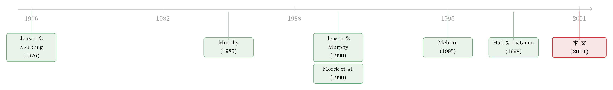

并购毁了股东的钱，却肥了老板的薪——银行兼并浪潮里的一笔私人账
本文读的是 Bliss & Rosen (2001, Journal of Financial Economics)：在 1986–1995 那场银行业大兼并里，收购通常并没有改善经营业绩、也没给收购方股东带来正回报；但它对收购方 CEO 的薪酬却有净正效应——主要通过「把银行做大」这条渠道。哪怕宣布并购当天股价应声下跌，CEO 的薪酬最终还是涨的。反过来，股权型薪酬占比越高的 CEO，越不愿意去做收购。
1 一桩看上去亏本的买卖
先讲一个谜。
上世纪八十年代末到九十年代，美国银行业经历了一场罕见的大合并。独立银行的数量在 1985 到 1995 这十年间硬生生少掉了三分之一；Rhoades (1994) 数过，光是 1986–1994 年就有大约 4,000 起收购，其中有 119 起是收购方和目标方资产都超过 10 亿美元的「大鱼吃大鱼」。
按理说，这么多并购扎堆发生，总该是因为它「划算」吧？可证据偏偏相反。一连串研究——Berger and Humphrey (1992)、Houston and Ryngaert (1994)、Rhoades (1994)——都发现：平均而言，这些银行并购既没有改善经营业绩，也没有给收购方股东带来正的超额回报。更扎眼的是宣布并购那一刻的市场反应：Hannan and Wolken (1989) 算出收购方股价平均跌 3.8%，Houston and Ryngaert (1994) 算出跌 2.8%（虽然目标公司股东乐开了花，股价分别涨 11.1% 和 10.3%）。
于是一个再自然不过的问题浮出水面：如果并购对股东是亏的，那为什么 CEO 们还前赴后继地去做？
本文（Bliss and Rosen, 2001）给出的答案，朴素得近乎冷酷：因为做并购对 CEO 自己是赚的。不是因为协同效应、不是因为多元化，而仅仅因为——并购能最快地把银行做大，而 CEO 的薪酬，归根结底是盯着「盘子大小」定的。
2 把问题拆成两半
要把这个故事讲清楚，作者很克制地把它拆成了两个方向相反的问题，这也是全文的骨架：
- 方向一（第 4 节）：并购 → 薪酬。 一桩收购，会不会抬高收购方 CEO 的薪酬？
- 方向二（第 5 节）：薪酬 → 并购。 反过来，CEO 薪酬的结构（现金 vs. 股权），会不会影响他做不做收购的决策？
这两个方向必须分开看，否则就会把因果搅成一团。而真正的难点在于：并购同时撬动了两个已知会影响薪酬的变量——一是公司规模 (firm size)，二是股价表现 (stock price performance)。并购让规模变大（推高薪酬），却让股价下跌（压低薪酬）。所以「并购对薪酬的净效应」到底是正是负，事先并不知道，得把这两股力量分开称重。
作者用一对北卡罗来纳州的银行把这层张力讲得活灵活现。1986–1995 年间，First Union 走的是激进收购路线，资产年增长率高达 17.3%；同期 Wachovia 只做了一桩大并购，资产年增长 9.2%。但论股价，Wachovia 年涨 17.1%，明显跑赢 First Union 的 14.5%。一个赢在「规模」，一个赢在「股价」。那么谁的 CEO 涨薪更快？答案是靠做大取胜的那个：First Union 的 CEO 总薪酬年增 13.2%，而股价表现更好的 Wachovia 只有 11.9%。
这个对照本身不是严格的识别，只是一个引子。但它精准地点出了全文的核心猜想：在「做大」和「做好」之间，薪酬似乎更买「做大」的账。
3 数据：32 家银行，十年，66 桩大并购
作者把样本锁定在 1986–1995 这十年——一个既有剧烈整合、又恰好覆盖银行业一个完整经济周期的窗口。样本是「在样本期内任意一年资产规模进入全美前 30、且至少存活 5 年」的银行控股公司，最终得到 32 家银行、298 个银行-年 (bank-year) 观测。
数据拼接得相当费力：
- 薪酬来自股东委托书 (proxy statements)，含工资、奖金、受限股 (restricted shares) 和股票期权 (stock options) 的授予与持有；
- 并购信息来自 Securities Data Corporation、Lexis-Nexis、《Mergers and Acquisitions》杂志和美联储；
- 规模与增长控制变量来自
Compustat，股价来自CRSP。
薪酬被拆成两个口径，这一刀切得很关键：
- 现金薪酬 (cash compensation) = 工资 + 奖金 + 其他现金；
- 总薪酬 (total compensation) = 现金薪酬 + 当年新授予的受限股与股票期权的价值。期权用 Black-Scholes 公式定价，统一假设 10 年期限（Murphy (1998) 指出样本中 83% 的 CEO 期权确为 10 年期、95% 行权价等于授予日股价，故这一简化并不离谱）。
几个描述性数字值得记住：样本银行资产均值/中位数为 $64.4B / $44.0B；现金薪酬平均 $1.61M，占新增总薪酬的 66% 以上——也就是说，受限股和期权占了总薪酬近三分之一，研究薪酬激励时绝不能把它们漏掉。即便用资产做归一，薪酬差异依然巨大：总薪酬从每百万美元资产 $6 到 $206 不等。
作者还估了一个「财富对股价的敏感度」：假设期权价值随股价变动 60% 同向变化（Gilson and Vetsuypens (1993) 的惯例，Murphy (1998) 指出这近似一个「刚刚价内」期权的敏感度），他们算出股价每涨 1%，CEO 财富平均增加 $104,608——但跨样本差异极大，最低 $2,688，最高超过 $750,000。这个数字后面会派上大用场：它衡量的是「股价跌一点，CEO 自己肉疼多少」。
最后是并购的口径。作者重点盯大并购 (megamergers)——定义为目标银行资产至少是收购方并购前资产的 10%、且目标不是已倒闭银行。这类并购才足够大，能真正撬动 CEO 薪酬。1984–1995 这 12 年里共有 66 桩大并购（之所以往前多取两年，是因为后面要看「过去三年的并购与增长」对当期薪酬的滞后影响）。Table 2 还顺手记下：所有大并购在三日窗口内的平均净公告反应（相对银行股指数）为 −2.4%——又一次印证「收购方股价应声下跌」。
4 方向一：做大，无论怎么做大，都加薪
现在进入全文的第一个核心结论。
过去关于「规模 → 薪酬」的研究有一长串（见下一节文献脉络），但它们大多没有区分公司是怎么长大的。这正是本文的切入点：内生增长和靠并购增长，董事会会一视同仁地奖励吗？
逻辑上有两种可能。如果董事会对所有形式的增长都同样奖励，那么一个急着涨薪的 CEO 就有了强烈的动机去搞收购——毕竟并购是把公司迅速做大的最快路径。但董事会也可能更精明，按「对股东价值的贡献」来差别化奖励不同的增长方式，从而堵住这条捷径。
作者的检验方法，是在薪酬回归里把并购带来的增长和其他增长拆开，看二者系数是否不同。结论很干脆：规模——无论怎样获得——都会增加 CEO 薪酬。也就是说，董事会并没有对「并购式增长」打折扣；靠收购堆出来的资产，和靠内生经营长出来的资产，在薪酬上几乎一样值钱。
接着，一个自然的问题是：那股价下跌的那一巴掌呢？并购宣布日股价平均跌 2%–4%，这部分确实会通过「财富—股价敏感度」削减 CEO 的薪酬与财富。但作者的核心论断是：这点损失，被「规模变大」带来的加薪盖过去了。两股力量一加一减，净效应为正。于是就有了那句最反直觉、也最有冲击力的结论：
即便一桩并购减损了股东价值，它仍可能完全符合 CEO 的私人利益。
这与代理理论 (agency theory) 的经典担忧严丝合缝：当管理者的目标函数和股东不一致时，「把公司做大」本身就成了一种私人收益（关于「做大」如何挤占股东利益、又如何被自由现金流放大，可参见《现金为什么一定要「还」出去？——四十年后，重读 Jensen 的自由现金流》）。
5 方向二：手里攥着股票的 CEO，下手更轻
如果故事到此为止，那不过是又一篇「老板做大公司自肥」的控诉。本文真正精彩的反转，在第二个方向。
「并购给 CEO 加薪」并不等于「CEO 是为了加薪才去并购」。要证明薪酬真的反过来影响了决策，得换个角度发问：如果一个 CEO 的薪酬里股权占比更高——也就是他和股东更「绑在一起」——他会不会更不愿意去做那些损害股东价值的收购？
这正是 Mehran (1995) 那条线索的延伸：薪酬合约的形式会影响公司业绩，暗示 CEO 会把薪酬结构纳入战略决策的考量。作者把它具体化成一个可检验的命题，并用样本里的银行去检验：用现金薪酬相对股权薪酬的比例（或等价地，股权型薪酬的占比）去预测银行做收购的概率。
结论是：股权型薪酬水平越高，银行做收购的概率越低。 也就是说，当 CEO 自己持有更多与股价挂钩的薪酬时，他做出「减损股东价值的并购」的次数变少了。这与「CEO 会对激励作出反应」的直觉完全一致——你让他和股东同坐一条船，他自然就少干那些把船凿穿的事。
这两个方向合在一起，才构成了本文完整的、闭环的故事：
- 结构决定行为（方向二）：给 CEO 更多股权，他就更克制；
- 结果偏向私利（方向一）：可一旦做了并购，哪怕股价跌，规模效应也会把他的薪酬抬上去。
换句话说，现金型薪酬像是给并购按下「加速键」，而股权型薪酬则像「刹车片」。这也呼应了后来一系列把薪酬与并购决策绑在一起的研究（例如《奖金，奖的不是「赚到钱」，而是「说了算」》 和《老板明知道银行会盯着他，为什么还主动把脖子伸过去？》）。
6 文献脉络
把这篇论文放回它生长的土壤里看，会更清楚它补上了哪一块拼图。
最上游是 Jensen and Meckling (1976) 立下的代理问题框架：当所有权与控制权分离、股东无法观察经理的努力时，把薪酬与某种业绩指标挂钩就成了缓解冲突的工具。Holmstrom (1979) 等人随后把这套契约理论做扎实。
往下，实证研究开始追问「薪酬到底由什么决定」。一条主线发现股价与公司规模是最稳健的两个决定因素：Murphy (1985)、Jensen and Murphy (1990) 给出了著名的 pay-for-performance 估计——CEO 股东财富每增加 $1,000，CEO 平均只多拿 $3.25，其中仅约 $0.02 是当期工资。Hall and Liebman (1998) 则发现 1980 年后这一敏感度因股权薪酬兴起而显著上升。银行业的专门证据来自 Barro and Barro (1990)、Hubbard and Palia (1995)。
另一条线在追问并购为什么发生，尤其是管理者自利的那一面：Roll (1986) 的 hubris 假说、Amihud and Lev (1981) 的个人风险分散动机，以及 Morck et al. (1990) 直击要害的「管理者目标会不会驱动坏并购」。

而 Mehran (1995) 提供了最后一块跳板——薪酬结构会影响业绩，暗示它也会影响重大决策。本文 (Bliss and Rosen, 2001) 站在这两条线的交汇处，做了一件别人没做的事：专门把「靠并购的增长」从「其他增长」里分离出来，再双向地把「并购↔薪酬」的关系都检验一遍。它的位置，正是把「规模决定薪酬」这条老结论，精确地接到了「并购决策」这个具体行为上。
7 评论与延伸（Q&A + 研究方向）
(a) 几个可能的疑问
Q：这和「老板因为 hubris 或帝国情结才并购」有什么区别？
区别在于机制是否可测。Hubris (Roll, 1986) 说的是 CEO 过度自信、高估自己创造协同的能力，是一种认知偏差。本文讲的是一个冷静的金钱激励：薪酬盯着规模，所以做大就涨薪——哪怕 CEO 心里清楚这桩并购对股东是亏的。本文的方向二（股权薪酬抑制并购）恰恰说明这不只是非理性冲动，而是对激励的理性反应。
Q：「并购加薪」会不会只是反向因果——好 CEO 管大公司，本来就该拿高薪？
这正是这条文献最难缠的内生性。理论上「规模—薪酬」相关可以来自「能力更强的人管更大的公司」（锦标赛理论、逆向选择），而非「把公司做大就该给现任经理加薪」。本文的回应是把并购式增长单列出来检验——如果连「快速买来的规模」都同样加薪，就更难用「能力匹配」来解释。但严格说，这仍是关联证据，不是干净的因果识别。
Q：298 个银行-年、32 家银行，样本是不是太小了？
对 1990 年代的手工委托书数据而言，这个规模并不算小，且聚焦大银行保证了并购足够大、足够「咬」得动薪酬。代价是外部有效性：结论是关于大型银行控股公司的，未必能推广到中小银行或非银行业。标准误也会因银行数少、且同一家银行多年重复出现而面临聚类问题。
Q：用 Black-Scholes 给期权定价、再假设期权随股价 60% 同向变动，会不会把激励算歪？
作者对此做了稳健性检验，称所有定性结论对「把期权敏感度一路提高到与股票等同 (parity)」都成立。这说明核心结论不依赖那个 60% 的具体取值。真正的隐忧在另一处：他们没有把存量股票和存量期权的价值变动计入总薪酬，只算了当年新授予的部分——这可能低估了股价下跌对 CEO 财富的真实冲击。
Q：宣布日股价跌 2%–4%，是不是就坐实了「并购毁价值」？
要小心。收购方股价下跌，一部分可能是 Myers and Majluf (1984) 意义上的信号效应——用股票支付并购，等于发行被市场认为高估的股票，股价因此下跌，这未必等于并购本身 NPV 为负。而且 Rhoades (1996) 综述 21 项研究后直言，关于收购方、乃至收购方与目标方合并后的净回报，证据「太不一致，无法下任何明确结论」。本文聪明地绕开了这场争论：它不去判定并购好坏，只指出无论好坏，私人收益都存在。
Q：那董事会为什么不干脆把这个激励漏洞堵上？
这是本文留下的开放问题。一个解释是治理本身的内生性：靠换股并购做大的银行，股权往往更分散（Holderness and Sheehan, 1988; Kahn and Winton, 1998），股东监督更弱，CEO 反而更容易在做大后多拿薪酬与在职消费。换言之，并购可能同时是私人收益的来源，又是削弱监督的手段。
(b) 几个可能的研究问题与提案
1. 把这套逻辑搬到公司债持有人视角。 【经济故事】本文只看了股东和 CEO，但银行并购对债权人的影响截然不同——做大可能意味着「大到不能倒 (too big to fail)」的隐性担保，从而压低信用利差。如果 CEO 靠并购做大同时自肥，债权人却因隐性担保受益，那股东的损失里有一部分其实是转移给了债权人，而非纯粹蒸发。 【可行性】高。可用 TRACE/Mergent FISD 的银行债券数据，做并购公告前后债券利差的事件研究，并按目标规模分组。已有相关证据可借鉴，见《刚跨过「大到不能倒」那道线，债主就笑了》。
2. 薪酬结构如何影响并购的支付方式与杠杆。 【经济故事】本文区分了现金 vs. 股权薪酬对「做不做并购」的影响，但没深入「怎么做」。股权薪酬高的 CEO 会不会更倾向现金支付（避免稀释自己持股的价值），或更克制杠杆？ 【可行性】中。需要委托书薪酬数据 + 并购支付结构数据（SDC），识别上要处理薪酬结构本身的内生性，可考虑用税制变化或行业薪酬基准作为外生扰动。
3. 外资持股能否替代股权薪酬，约束这条「做大自肥」的链条？ 【经济故事】本文的刹车片是「让 CEO 持有股权」。一个平行的监督机制是机构/外资股东的存在。外资持有人是否会像股权薪酬一样，降低价值减损型并购的概率？ 【可行性】中。需要跨国或跨州的机构持股数据，识别上可借力指数纳入等准自然实验。关于「谁来盯着老板」与持股结构，可参见《谁来盯着老板？答案藏在「他买了多少」里》。
4. 用更长样本检验「并购加薪」是否随治理改革衰减。 【经济故事】本文样本止于 1995 年。此后 SOX、薪酬话语权 (say-on-pay)、强制薪酬披露等改革密集出台。如果这些改革真的强化了监督，那么「靠并购做大就加薪」的弹性，理应在 2005 年后显著下降。 【可行性】高。ExecuComp 提供了 1992 年起的标准化薪酬面板，把 Bliss-Rosen 的回归原样跑到今天、做分时段比较即可，是一个干净的「概念复制 + 制度变迁」设计。
8 我的判断与参考文献
贡献。 这篇论文最聪明的地方，是把一个被前人混在一起的东西拆开了：它不满足于「规模决定薪酬」这条老结论，而是追问「靠并购堆出来的规模，是否也一样值钱」，并给出肯定答案；更难得的是它双向叙事——既证明并购抬高薪酬，又证明薪酬结构反过来约束并购——把代理理论从一句空泛的担忧，落到了一个可观测的行为闭环上。"即便毁损股东价值的并购也可能符合 CEO 私利"这句话，今天读来仍然锋利。
对识别的担忧。 全文的硬伤在于因果识别偏弱。「规模—薪酬」的正相关始终背着「能力匹配」这个替代解释的包袱，单靠区分增长来源并不能完全排除它；方向二里「股权薪酬 → 少并购」的回归，也可能被「治理更好的银行同时给更多股权、又更少乱并购」这类遗漏变量驱动。样本只有 32 家大银行，聚类与小样本推断都值得更谨慎。此外，把存量股权的价值变动排除在薪酬之外，可能系统性低估了股价下跌对 CEO 的真实惩罚——这会让「净效应为正」的结论显得偏强。
后续想看到什么。 我最想看到的，是用一个真正外生的薪酬结构冲击（比如税制改革、或并购支付被监管限制的断点）来重新识别方向二，并把债权人和外资股东这两类被本文忽略的相关方一并纳入称重。毕竟，如果股东亏的钱有相当一部分只是转移给了「大到不能倒」担保下的债权人，那么这桩"亏本买卖"的福利账，就远比一篇只盯着股东与 CEO 的论文所讲的更复杂。
参考文献
- Amihud, Y., Lev, B. (1981). Risk reduction as a managerial motive for conglomerate mergers. Bell Journal of Economics 12, 605–617.
- Barro, J.R., Barro, R.J. (1990). Pay, performance and turnover of bank CEOs. Journal of Labor Economics 8, 448–481.
- Berger, A.N., Humphrey, D.B. (1992). Megamergers in banking and the use of cost efficiency as an antitrust defense. Antitrust Bulletin 37, 541–600.
- Bliss, R.T., Rosen, R.J. (2001). CEO compensation and bank mergers. Journal of Financial Economics 61(1), 107–138.
- Gilson, S.C., Vetsuypens, M.R. (1993). CEO compensation in financially distressed firms: an empirical analysis. Journal of Finance 48, 425–458.
- Hall, B.J., Liebman, J.B. (1998). Are CEOs really paid like bureaucrats? Quarterly Journal of Economics 103, 653–691.
- Hannan, T.H., Wolken, J.D. (1989). Returns to bidders and targets in the acquisition process: evidence from the banking industry. Journal of Financial Services Research 3, 5–16.
- Holmstrom, B. (1979). Moral hazard and observability. Bell Journal of Economics 10, 74–91.
- Houston, J., Ryngaert, M. (1994). The overall gains from large bank mergers. Journal of Banking and Finance 18, 1155–1176.
- Hubbard, R.G., Palia, D. (1995). Executive pay and performance: evidence from the U.S. banking industry. Journal of Financial Economics 39, 105–130.
- Jensen, M.C., Meckling, W.H. (1976). Theory of the firm: managerial behavior, agency costs and ownership structure. Journal of Financial Economics 3, 305–360.
- Jensen, M.C., Murphy, K.J. (1990). Performance pay and top-management incentives. Journal of Political Economy 98, 225–264.
- Mehran, H. (1995). Executive compensation structure, ownership, and firm performance. Journal of Financial Economics 38, 163–184.
- Morck, R., Shleifer, A., Vishny, R.W. (1990). Do managerial objectives drive bad acquisitions? Journal of Finance 45, 31–49.
- Murphy, K. (1985). Corporate performance and managerial remuneration. Journal of Accounting and Economics 7, 11–42.
- Myers, S., Majluf, N.S. (1984). Corporate financing and investment decisions when firms have information that investors do not have. Journal of Financial Economics 13, 187–221.
- Rhoades, S.A. (1994). A summary of merger performance studies in banking, 1980–93. Federal Reserve Board, Staff Study No. 167.
- Roll, R. (1986). The hubris hypothesis of corporate takeovers. Journal of Business 59, 197–216.